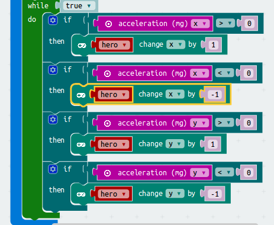

In this project, we’re going to create a hand-held game, where you tilt the microbit to control a character which is trying to catch a flashing enemy on the screen.
Start a new project at makecode.microbit.org.
Make two new variables: one called hero and another called enemy.
Drag a set item to block into your on start block, and change the “item” to “enemy”.
Find the create sprite at block in the Advanced > Game drawer, and connect it to the end of your set enemy to block.
Take a look at the microbit preview on the left. You’ll see that a dot has appeared in the centre of the screen. This is the enemy.
The game won’t be much fun if the enemy always appears at the same position on the screen every time. Let’s make it appear at a random position…
Find the pick random 0 to 4 block in the Math drawer, and use it to replace both “2” coordinates in the create sprite at block.
Every time your code runs, the pick random 0 to 4 block will return a number that’s either 0, 1, 2, 3, or 4.
Each of those five numbers—0, 1, 2, 3, 4, 5—corresponds with one of the 5 rows or columns in your microbit’s LED display.
So, each time your microbit restarts, the enemy dot will appear at a different, random location.
Download your code and try it out! Does the enemy dot appear at a different location each time you restart the microbit?
Now, can you add a second sprite, assigned to your hero variable?
The hero doesn’t need to be randomly positioned, so you can leave their x and y values at “2”.
Our hero and enemy look kinda similar. Let’s make the enemy flash, so we can tell them apart.
Find the item set x to 0 block in Advanced > Game, and add it to the end of your code.
Change the “item” to “enemy”, the “x” to “blink”, and the “0” to “500”.
Download your code and see whether you can tell the difference between the hero and the enemy.
Now we have a hero to chase our enemy, let’s make them move!
We want to constantly check for which way the microbit is being tilted, and then adjust the position of hero to match.
The way we can detect tilt is via the acceleration block.
Add a while true loop to your code.
Put an if block inside your while loop, and then plug a 0 > 0 comparison block into it.
Put an acceleration x block into the first part of the comparison block, and leave the number in the second part as “0”.
Finally, find the item change x by 1 block inside Advanced > Game, and clip it inside your if block. Change the “item” to “hero”.
Duplicate the entire if block, with all its contents, three more times, and tweak it so that:
acceleration x < 0, then change x by -1acceleration y > 0, then change y by 1acceleration y < 0, then change y by -1In the end, your code should look like this: 
Download your code, and try it out by tilting the microbit.
Does the hero move a little too quickly?
Try adding a pause 100 block, at the end of each of the four if blocks.
This will slow down the while loop, meaning the hero moves a little less quickly when you tilt the device.
Now we can move the hero, we need to make it so that they can catch the enemy!
There is a block called “touching” that lets us detect whether one sprite is on top of another. We can use it to detect whether our hero has caught the enemy.
Add a new if block, right at the start of your while block.
Drag in an item touching [] block, and fill it with the hero and enemy variables, like this:
Add a half second pause (so that the player has time to notice that that enemy has been caught), by adding a pause (ms) 100 block and changing the number to “500”.
Finally, set a new position for the enemy, so that the hero can attempt to catch him again!
Use two item set x to 0 blocks from Advanced > Game, like so:
Download the code and try it out!
It would be fun if we kept track of how many times the hero caught the enemy, and finally declare victory after the enemy is caught five times.
Drag the set score 0 block from Advanced > Game into your code, just before the while loop.
Rather than “while true”, use some new blocks to change it to “while score < 5”, like this:
Add a change score by 1 block, and a show score block inside our if hero touching enemy condition:
And finally, right a the end of the game, after your while loop finishes, add a game over block.
This will display a nice animation when we catch the enemy a fifth and final time.
Download your code and try it out!